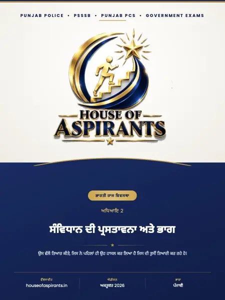

📖 ਆਨਲਾਈਨ ਪੜ੍ਹੋ · 7 ਪੰਨੇ⬇ ਡਾਊਨਲੋਡ
ਪੜ੍ਹ ਲਿਆ? ਇੱਕ ਛੋਟੇ MCQ ਟੈਸਟ ਨਾਲ ਜਾਂਚੋ ਕਿ ਕੀ ਯਾਦ ਰਿਹਾ।

ਸਾਰ
PUNJAB POLICE•PSSSB•PUNJAB PCS•GOVERNMENT EXAMS ਭਾਰਤੀ ਰਾਜ ਵਿਵਸਥਾ ਅਧਿਆਇ 2 ਸੰਵਿਧਾਨ &@ਦੀ \*M0ਪਸਤਾਵਨਾ ਅਤੇ -\>ਭਾਗ ★ ਉਸ ਵੱਲ ਤਿਆਰ ਕੀਤੇ, ਜਿਸ ਨੇ ਪਹਿਲਾਂ ਹੀ ਉਹ ਹਾਸਲ ਕਰ ਲਿਆ ਹੈ ਜਿਸ ਦੀ ਤੁਸ ਤਿਆਰੀ ਕਰ ਰਹੇ ਹੋ। ਵਬਸਾਈਟ houseofaspirants. in ਐਡੀਸ਼ਨ ਅਕਤੂਬਰ 2026 ਭਾਸ਼ਾ ਪੰਜਾਬੀ
ਡਾਊਨਲੋਡ
ਅਧਿਆਇ 02 ਸੰਵਿਧਾਨ ਦੀ ਪ੍ਰਸਤਾਵਨਾ ਅਤੇ ਭਾਗ (PDF) ਡਾਊਨਲੋਡ ਕਰੋ - 1.7 MB, 7 ਪੰਨੇ, ਇਸੇ ਸਾਈਟ ਉੱਤੇ। ਕੋਈ ਸਾਈਨ-ਅੱਪ ਨਹੀਂ, ਕੋਈ ਈਮੇਲ ਨਹੀਂ, ਕਿਸੇ ਹੋਰ ਸਾਈਟ ਰਾਹੀਂ ਨਹੀਂ।
ਇਸ ਫ਼ਾਈਲ ਬਾਰੇ
- ਫ਼ਾਈਲ ਦਾ ਨਾਮ:
preamble-and-parts-of-the-constitution-notes-punjabi.pdf - ਪੰਨੇ: 7
- ਆਕਾਰ: 1.7 MB
- ਪ੍ਰਕਾਸ਼ਿਤ: 23 ਅਕਤੂਬਰ 2026
- ਸ਼੍ਰੇਣੀ: ਪੜ੍ਹਾਈ ਸਮੱਗਰੀ
ਇਹ ਫ਼ਾਈਲ ਕਿੱਥੇ ਹੈ
- ਵਿਸ਼ਾ: ਭਾਰਤੀ ਰਾਜ-ਵਿਵਸਥਾ
- ਭਾਸ਼ਾ: ਪੰਜਾਬੀ
- ਅਧਿਆਇ: ਅਧਿਆਇ 02 ਸੰਵਿਧਾਨ ਦੀ ਪ੍ਰਸਤਾਵਨਾ ਅਤੇ ਭਾਗ
ਇਹ ਪੰਨਾ content/study-material/polity/punjabi/ਅਧਿਆਇ 02 - ਸੰਵਿਧਾਨ ਦੀ ਪ੍ਰਸਤਾਵਨਾ ਅਤੇ ਭਾਗ/ ਤੋਂ ਆਪਣੇ-ਆਪ ਬਣਿਆ ਹੈ। ਵਿਸ਼ਾ, ਭਾਸ਼ਾ ਅਤੇ ਅਧਿਆਇ ਫ਼ਾਈਲ ਦੇ ਫੋਲਡਰਾਂ ਤੋਂ ਲਏ ਗਏ ਹਨ, ਅਤੇ ਪੰਨਿਆਂ ਦੀ ਗਿਣਤੀ ਤੇ ਸਾਰ ਖ਼ੁਦ PDF ਵਿੱਚੋਂ ਪੜ੍ਹੇ ਗਏ ਹਨ।